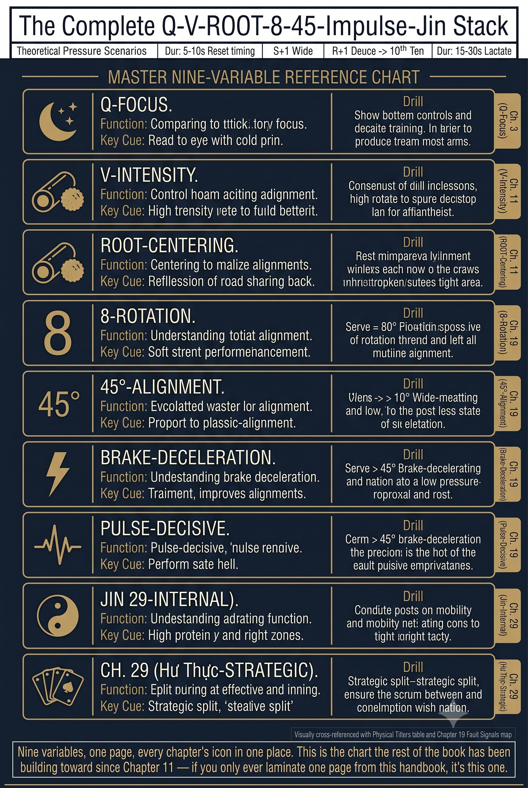
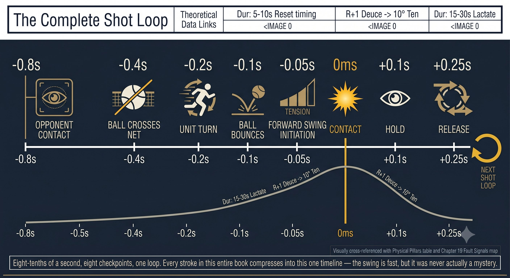
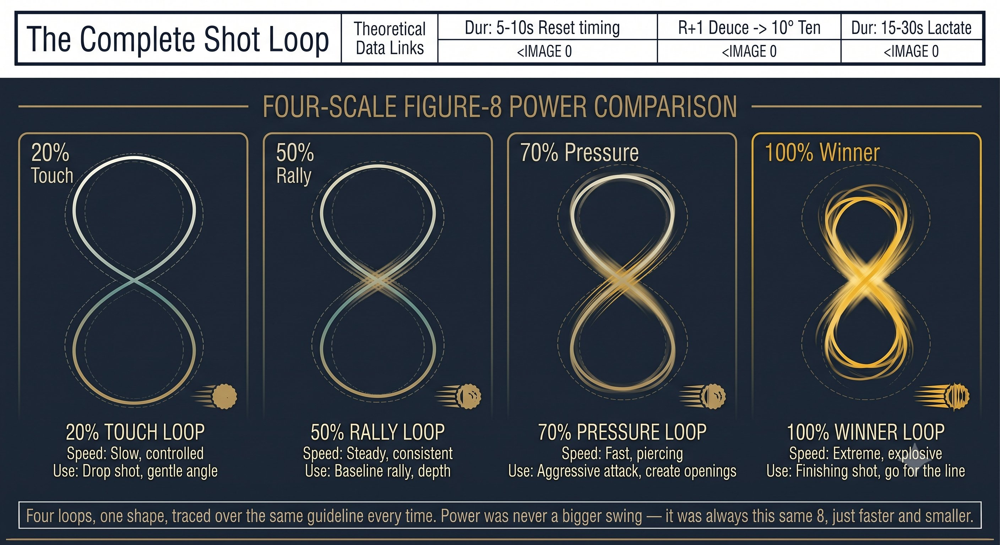
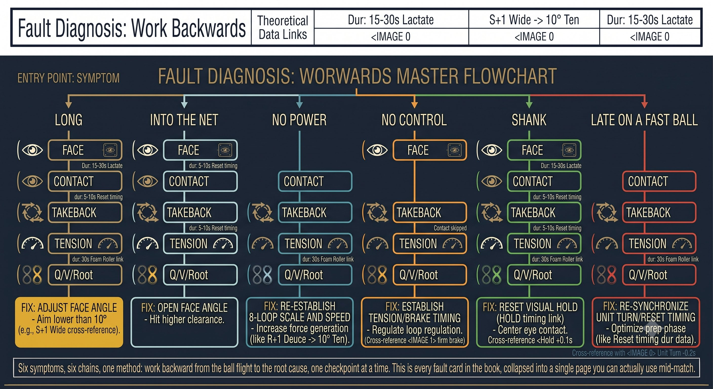

Chương 30: Hệ Thống Thống Nhất¶
Thẻ Tham Chiếu Nhanh Q-V-ROOT-8-45-Impulse¶
Một trang. Toàn bộ hệ thống. Giữ trong túi bạn. Lướt qua trước mỗi trận đấu.
Toàn Bộ Stack Q-V-ROOT-8-45-Impulse-Kình¶
Toàn Bộ Vòng Lặp Cú Đánh (0.8 Giây)¶
Reset Trước Điểm (5 Giây)¶
-
Chân xuống đất: một cú ấn tripod (ngón cái, ngón út, gót chân). Vòm trong bàn chân nâng lên. Cảm nhận đường xoắn ốc và đường lưng kích hoạt.
-
Đầu về ngang bằng: cằm gập (như giữ một quả đào dưới cằm). Một lần xoay trái-phải chậm. Hệ tiền đình ổn định.
-
Tay về 3/10: siết đến 8/10, rồi thả về 3/10. Ngọ nguậy các ngón tay. Cẳng tay mềm.
-
Câu hỏi cốt lõi: "Tôi đang ở đâu? Bóng gì? Mặt vợt nào? Cách cầm nào? Tiếp xúc ở đâu? Cú chuẩn bị nào? Độ căng nào?"
Forehand Push: Quét Toàn Thân¶
Vòm chân (chân sau) đến cơ chéo bụng đến đầu bất động đến mắt đỗ đến push.
– Nạp: chân sau vặn vào, cơ chéo bụng căng ra, ngực mở, cổ tay lỏng.
– Đỗ: đầu dừng lại. Mắt nhảy đến vùng tiếp xúc (30cm phía trước, ngang hông). "Đỗ".
– Thực thi: ngực bắn trước, rồi cơ chéo bụng, rồi ngực, rồi lòng bàn tay. Lòng bàn tay đẩy xuyên qua 12 inch.
– Phanh: chân trước giậm mạnh, hông trước đập vào tường. Cơ chéo bụng dừng thân người lại.
– Xung: một cú đẩy xuyên thấu 1-inch. Không phải một cú vung. Lòng bàn tay đẩy xuyên qua trái bóng.

Hình 30.1
– Giữ: mắt và đầu vẫn ở vị trí đỗ. Nghe tiếng tiếp xúc trước khi thấy kết quả.
– Lỗi: bắp tay nóng hoặc khuỷu tay châm chích nghĩa là đường truyền lực đã gãy tại vai. Reset: chân sau vặn, ngực đẩy tay.
Backhand Saber: Quét Toàn Thân¶
Cơ mông (chân sau) đến lưng xô đến đầu nghiêng bên đến mắt đỗ đến saber.
– Nạp: chân trước bước chéo, hông sau nạp lực. Tay không thuận kéo cây vợt ra sau — cảm nhận độ căng từ hông đến lưng xô. Khuỷu tay cao.
– Đỗ: đầu dừng lại, nghiêng bên. Cằm trên vai trước. Mắt nhảy đến tiếp xúc (30cm phía trước hoặc bên, ngang ngực). "Đỗ".

Hình 30.2
– Thực thi: hông bắt đầu tiến trong khi cây vợt vẫn còn đi ra sau — một sự chuyển động ngược. Lưng xô kéo khuỷu tay xuống, cạnh vợt cắt xuống phía sau bóng.
– Phanh: ngực vẫn giữ nghiêng bên. Rễ chân trước giữ vững. Chân sau đẩy, và lực cắt bật lưng xô.
– Xung: một cú chặt xuống 3-inch xuyên qua bóng. Cạnh dẫn, mặt vợt vuông góc tại khoảnh khắc cuối cùng.
– Giữ: mắt và đầu vẫn nghiêng bên. Cằm trên vai cho đến khi bóng qua lưới.
– Lỗi: cổ tay vẩy hoặc nhún vai nghĩa là bạn đã mất kết nối với lưng xô. Reset: khuỷu tay cao.
Điều Tiết Công Suất: Cùng Một Số 8, Khác Kích Cỡ và Tốc Độ¶
NGUYÊN LÝ: Bạn không đổi cú vung để tạo công suất. Bạn đổi KÍCH CỠ và TỐC ĐỘ của số 8. Cùng vòng lặp, cùng SSC, cùng cú phanh — chỉ khác kích cỡ và tốc độ. Tensegrity vẫn được nạp lực.
Chẩn Đoán Lỗi: Truy Ngược¶
Câu Nhắc Một Hơi Thở Cho Trận Đấu¶
VẶN CHÂN ĐẾN RỄ. ĐẦU BẤT ĐỘNG. MẮT ĐỖ. SỐ 8 NHỎ TRÊN MẶT PHẲNG KÍNH 45 ĐỘ. PHANH CỨNG. XUNG 1-INCH.
Nói thầm câu này trước mỗi điểm. Nó kích hoạt toàn bộ stack, từ mặt đất đến Kình:
– Vặn chân: Root (tripod cộng vòm chân) kích hoạt nền tảng tensegrity.

Hình 30.3
– Đầu bất động: V (tiền đình) làm yên VOR và VSR. Nền tảng ổn định.
– Mắt đỗ: Q (Quiet Eye) khóa vùng tiếp xúc. Vòng lặp CORE được nạp sẵn.
– Số 8 nhỏ: hình số 8 vẫn liên tục, không nghỉ. SSC nạp lực.
– Trên mặt phẳng kính 45 độ: drive và xoáy hợp nhất.
– Phanh cứng: chân trước hoặc hông dừng lại. Năng lượng truyền lên trên.
– Xung 1-inch: Phát Kình giải phóng qua tensegrity. Một trái bóng nặng.

Hình 30.4
QUY TẮC: Đây không phải là một danh sách để suy nghĩ qua. Đó là một TRẠNG THÁI CƠ THỂ. Hãy luyện tập cho đến khi "vặn chân, đầu bất động, mắt đỗ, số 8 nhỏ, phanh, xung" chính LÀ tư thế sẵn sàng của bạn.
Kiến Trúc Hệ Thống Hoàn Chỉnh¶
Ưu Tiên Huấn Luyện: Tập Gì¶
Thẻ tham chiếu nhanh này chứa toàn bộ hệ thống Q-V-ROOT-8-45-Impulse-Kình. Chương 1 đến 29 cung cấp lý thuyết chuyên sâu, sinh cơ học, và các bài tập. Thẻ này dùng cho ngày thi đấu và nhắc nhở khi tập luyện. In ra. Ép nhựa. Giữ trong túi bạn.
VẶN CHÂN. ĐẦU BẤT ĐỘNG. MẮT ĐỖ. SỐ 8 NHỎ TRÊN 45. PHANH. XUNG. THÍNH. HÓA. PHÁT.
– Trước trận: in thẻ này ra. Đọc một lần. Bỏ vào túi.

Hình 30.5
– Trước điểm: reset 5 giây (chân, đầu, tay, câu hỏi cốt lõi).
– Tại điểm nảy: "đỗ" (mắt nhảy). Đầu đóng băng. Chân vặn vào.
– Cú vung: một số 8 nhỏ trên mặt phẳng kính 45 độ. Bắt chéo nhanh. Phanh cứng.
– Tiếp xúc: lòng bàn tay đẩy xuyên qua (thuận tay), hoặc cạnh vợt cắt xuống (trái tay). Một cú xung 1-inch.
– Giữ: mắt và đầu giữ nguyên. Nghe tiếng tiếp xúc. Đếm "xuyên qua".
– Nếu có lỗi: đừng sửa mặt vợt. Hãy hỏi: đầu có bất động không? Mắt có đỗ không? Rễ có vững không? Số 8 có mượt không? Phanh có cứng không?
– Dưới áp lực: trình tự giữ nguyên. "Vặn. Bất động. Đỗ. 8. Phanh. Xung." Thở.